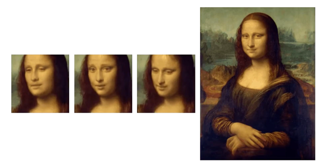

Deepfake Video Detection with Convolutional and Recurrent Networks
Problem Statement
Recent advances in deep learning have led to the development and growing frequency of deepfakes. A deepfake is any video, audio, or image that has been altered or generated using deep learning methods [2]. An example is the series of pictures below, where the Mona Lisa has been given different facial expressions and head positions.
Deepfake of the Mona Lisa [3]
Deepfakes have many positive applications, including image enhancement and helping people who lost their voice due to illness [2], to name only a few. However, there are malicious applications of deepfakes, such as politically motivated misinformation and corporate sabotage. These often take the form of a video that falsely portrays the subject saying or doing something that damages their public image. Thus, we aim to detect deepfake videos to help neutralize the negative effects of deepfakes. Specifically, our approach is to apply deep learning methods, including convolutional neural networks (CNNs) and long short-term memory networks (LSTMs) to determine whether a video from the Facebook Deepfake Detection Challenge dataset [1] is real or fake. In addition, multiple network architectures were analyzed to determine which model and corresponding architecture produce the highest accuracy for detecting deepfakes. Further, selecting the highest performing models and adding them to an ensemble could result in higher accuracy than that attained with any individual model.